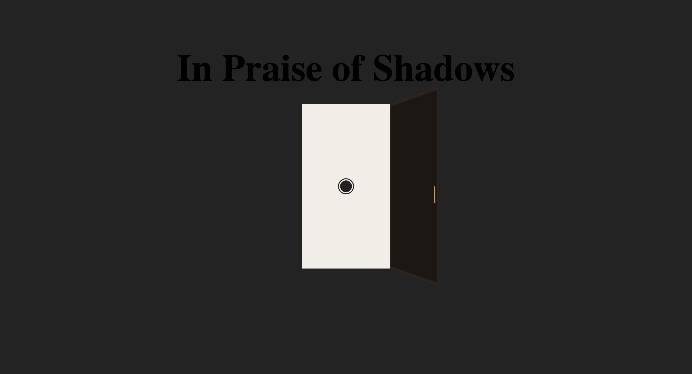
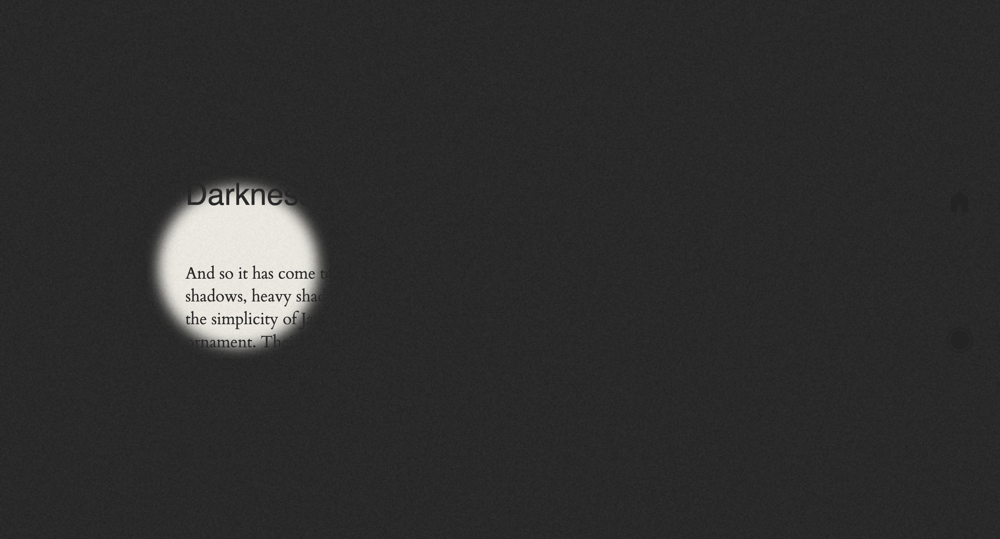
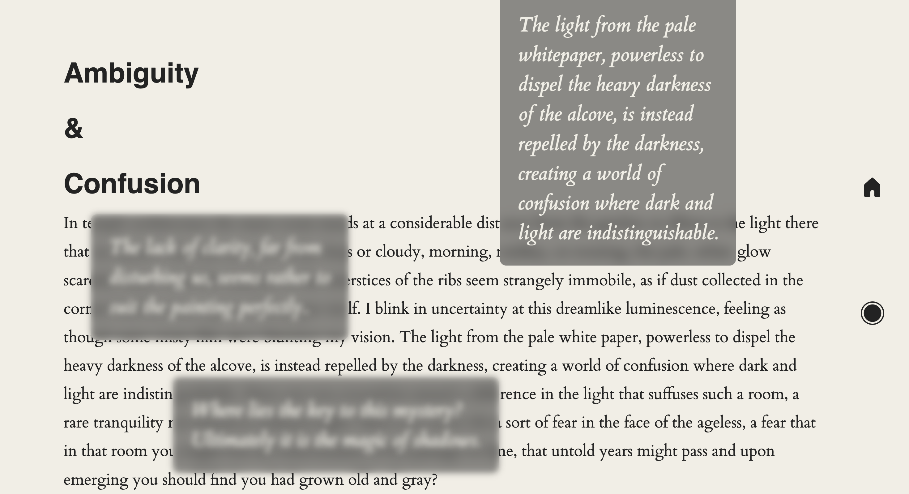
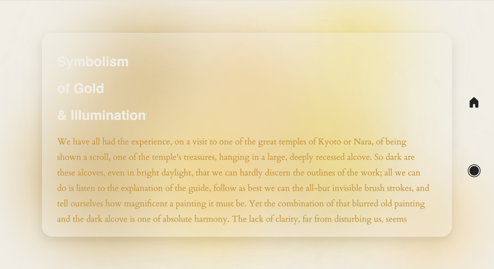
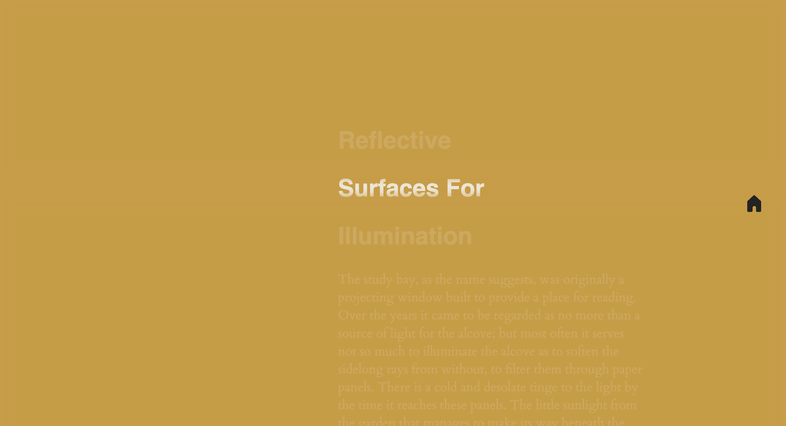

In Praise of Shadows
Jac Aileen





Visit→ In Praise of Shadows
"What I really enjoy by her website is the interactive aspect and how she manage to add a visual style without losing the content. Jaq also used small details that made the website even more engaging and beautiful. "
Visit Jac Website